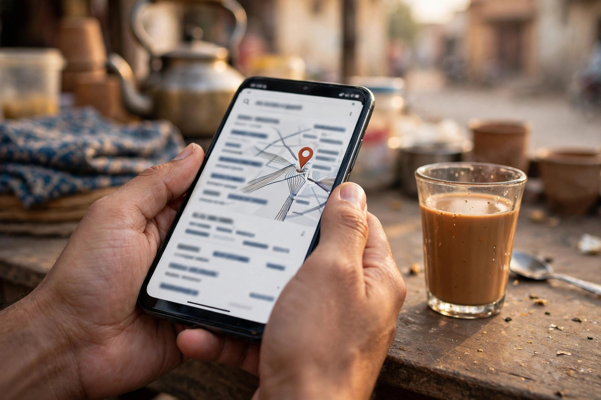
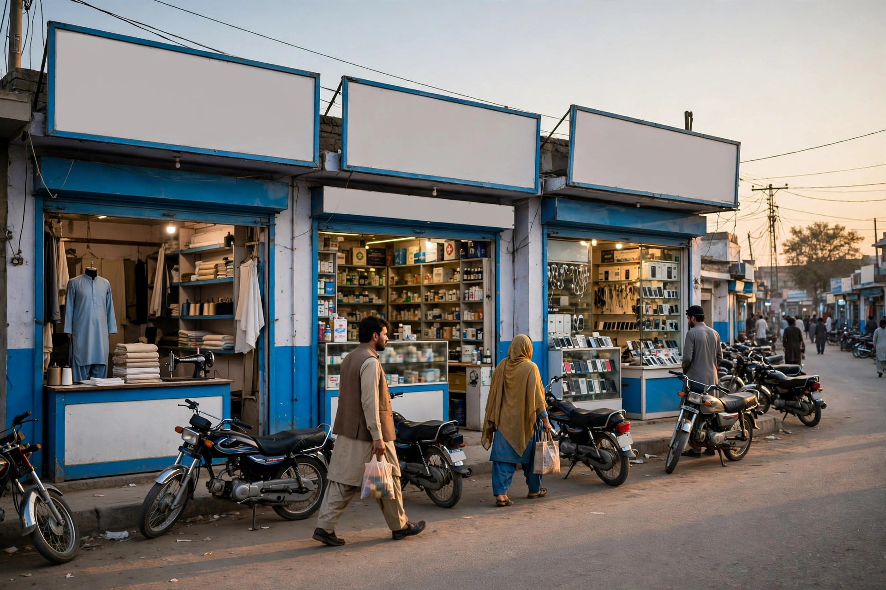

Every Layyah business owner has heard a customer say: I found you on Google. Fewer stop to ask the more useful question: what exactly did that customer type? The answer decides whether the next hundred customers find you too, because Google matches searches to pages that use the same language.
Local search language in Layyah has its own character. It mixes English, Urdu and Roman Urdu, leans on place names and landmarks, and follows the seasons of the district. Understanding it is not a technical trick; it is listening carefully to your own customers.
The Gap Between Your Words and Theirs
Businesses describe themselves in trade language: proprietor terms, formal service names, English learned from brochures. Customers search in need language: the problem, the product, the occasion. A shop may call itself a garments outlet while the customer types wedding suits or school uniform Layyah.
Closing that gap is the heart of keyword research and strategy. Write your listing services and website pages primarily in the customer language, keeping trade terms only where customers also use them.

Place Names, Roads and Landmarks
Local searches anchor themselves to geography, but not always to the town name alone. People add the area they are in, the road they know, or simply near me when the phone already knows their location. Spellings vary too, and a page that uses the common forms of local names reads naturally to both Google and the reader.
For a business based in Layyah, the location page and service pages should state the town, the road and the surrounding areas served, honestly and in full sentences. That is how the Layyah location page on this website is written, and it is a pattern any local business can follow on its own site.
English, Urdu and Roman Urdu in One Search
Many Layyah searchers move between languages inside a single phrase: an English service word, a Roman Urdu need word, an English place name. Others speak their search aloud, and voice search turns natural spoken phrasing into text, questions included.
- Service plus town: the most common pattern for shops and services
- Need plus near me: urgent searches for clinics, pharmacies and repairs
- Product plus occasion: wedding, school and seasonal shopping searches
- Price and timing questions: asked in full sentences, often by voice
You do not need to chase every variation. Cover the main patterns in natural writing and your pages will match most real searches, as the examples in SEO for Layyah shops and retailers demonstrate.

Seasonal and Occasion Keywords
Layyah searches rise and fall with the district calendar: admissions after results, uniforms before school terms, wedding shopping in its seasons, seed and spray language through the crop cycle described in SEO for Layyah agriculture and cotton traders. Pages prepared a few weeks before each wave, using the words of that wave, meet demand that generic pages miss.
Keep a simple notebook, physical or on your phone, of phrases customers actually use when they call or visit. Over a season it becomes the most honest keyword research a local business can own.
Use Keywords Like a Host, Not a Salesman
The rule is simple: a keyword belongs where it helps the reader. Important phrases go in page titles, headings and opening lines, then the writing returns to plain, useful explanation. Pages stuffed with repeated phrases read badly, convert badly and risk penalties. Pages written for Layyah customers, in Layyah language, about real services in Layyah, rank for the right reasons and stay ranked.

How to Check Your Own Pages Against Real Searches
Once a season, sit with your phone and search the way a customer would. Type the service or product you most want to sell, add Layyah, and see honestly whether your business appears and what the result says about you. Try the near me version at your own location, and try a question version of the same need. Note which competitors appear and what words their pages use that yours do not.
Then adjust one page at a time: a heading that matches the common phrase, an opening paragraph in customer language, a missing service added to your listing. Small corrections, repeated season by season, steadily close the gap between how you describe your business and how Layyah looks for it. That gap, more than any technical secret, is where most local customers are won and lost.
Keep notes of each test and its date, so you can see the movement for yourself instead of guessing whether the work is helping.
Frequently Asked Questions
What is a local keyword, in simple words?
It is the phrase a nearby customer types when looking for a business, usually combining what they need with where they need it, such as a service plus Layyah, or a product plus near me. Matching those phrases on your pages helps Google connect you to that customer.
Should my website use Roman Urdu words?
Where your customers genuinely use them, natural mixing can help your pages sound like real local speech. The safe approach is clear English as the base, with local terms and place spellings used where they fit honestly, never forced into every sentence.
How do I find the keywords my customers use?
Listen to how customers describe their need on the phone and at the counter, check the suggestions Google shows as you type a search, and look at the questions people ask on your listing. Professional keyword research organises these clues into a proper plan.
Can using the same keyword many times help my page rank?
No. Repeating a phrase unnaturally, called keyword stuffing, makes pages unpleasant to read and can harm rankings. Use important phrases where they belong, in headings and natural sentences, and write the rest of the page helpfully for the reader.
Want More Customers From Google?
Call 0327 7350830 or email seozaheer14@gmail.com. Zaheer Seo Expert, Layyah - Rajan Shah Road, Rana Nagar, Chak 116 TDA, Pakistan. Open 24 hours.
Get Your SEO Strategy →